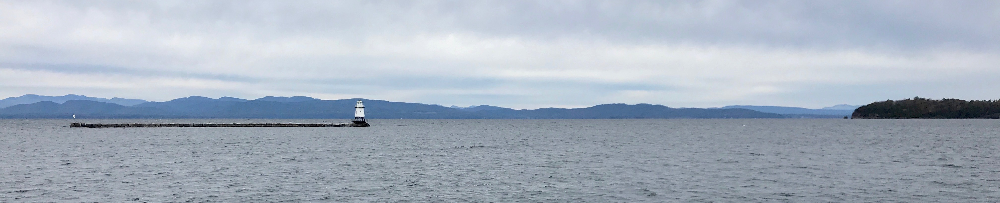
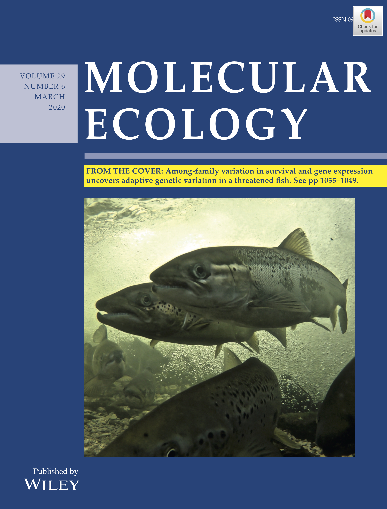
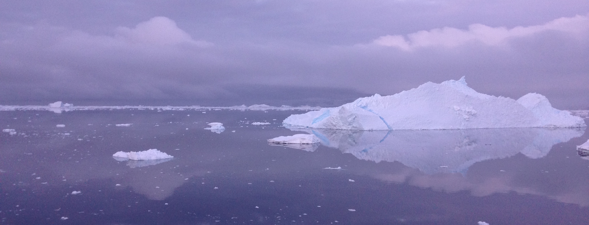

Publications + CV
Education
PhD Biological Sciences, Purdue University (December 2020)• Computational Life Sciences concentration
MS Biology, Central Michigan University (August 2015)
BS Biological Sciences, Eastern Illinois University (December 2012)
• Chemistry minor
ASA Science and Arts, Olney Central College (May 2010)

Publications
- Lamka GF, Harder AM, Sundaram M, Schwartz T, Christie MR, DeWoody JA, and Willoughby JR. 2022. Epigenetics in ecology, evolution, and conservation. Frontiers in Ecology and Evolution: 307.
- Harder AM, Walden KKO, Marra NJ, Willoughby JR. 2022. High-quality reference genome for an arid-adapted mammal, the banner-tailed kangaroo rat (Dipodomys spectabilis). Genome Biology and Evolution 14:evac005.
- Harder AM and Christie MR. 2022. Genomic signatures of adaptation to novel environments: hatchery and life-history associated loci in landlocked and anadromous Atlantic salmon (Salmo salar). Canadian Journal of Fisheries and Aquatic Sciences. 79:761-770
- DeWoody JA, Harder AM, Mathur S, and Willoughby JR. The long-standing significance of genetic diversity in conservation. Molecular Ecology 30:4147-4154.
- Yin X, Martinez AS, Perkins A, Sparks MM, Harder AM, Willoughby JR, Sepúlveda MS, and Christie MR. Incipient resistance to an effective pesticide results from genetic adaptation and the canalization of gene expression. Evolutionary Applications 14:847-859.
- Harder AM, Willoughby JR, Ardren WR, and Christie MR. 2020. Among family variation in survival and gene expression uncovers adaptive genetic variation in a threatened fish. Molecular Ecology 29:1035-1049.
Featured as a 'From the Cover' article and highlighted in a Perspective piece by Dr. Mariah Meek
- Harder AM, Ardren WR, Evans AN, Futia MH, Kraft CE, Marsden JE, Richter CA, Rinchard J, Tillitt DE, and Christie MR. 2018. Thiamine deficiency in fishes: causes, consequences, and potential solutions. Reviews in Fish Biology and Fisheries 28:865-886.
- Willoughby JR, Harder AM, Tennessen JA, Scribner KT, and Christie MR. 2018. Rapid genetic adaptation to a novel environment despite a genome-wide reduction in genetic diversity. Molecular Ecology 27:4041-4051.
- Dömel JS, Melzer RR, Harder AM, Mahon AR, and Leese F. 2017. Nuclear and mitochondrial gene data support recent radiation within the sea spider species complex Pallenopsis patagonica. Frontiers in Ecology and Evolution 4:139.
- Harder AM, Halanych KM, and Mahon AR. 2016. Diversity and distribution within the sea spider genus Pallenopsis(Chelicerata: Pycnogonida) in the Western Antarctic as revealed by mitochondrial DNA. Polar Biology 39:677-688.
- Dietz L, Arango C, Dömel JS, Halanych KM, Harder AM, Held C, Mahon AR, Mayer C, Melzer RR, Rouse GW, Weis A, Wilson NG, and Leese F. 2015. Regional differentiation and extensive hybridization between mitochondrial clades of the Southern Ocean giant sea spider Colossendeis megalonyx. Royal Society Open Science 2:140424.
- Harder AM, Willoughby JR, Doyle JM. 2018. Peppered moths and the Industrial Revolution: barking up the wrong tree? National Center for Case Study Teaching in Science.
- Willoughby JR, Harder AM, Doyle JM. 2018. Fish out of (salt) water: adaptation of an ocean-going fish to freshwater environment. National Center for Case Study Teaching in Science.
- A shiny app designed to convey survey results regarding how the public received and acted upon COVID-19 information in Alabama, Louisiana, and Mississippi.
- The survey evaluated the sources of information utilized most by the public, including various national, state, and local-level news outlets and social media sites.
- The survey also evaluated trust in various sources of information, as well as how information impacted survey participants’ health behaviors to mitigate COVID-19.
- Docket ID No. FWS-HQ-ES-2021-0033, Endangered and Threatened Species: Designation of Experimental Populations
- Led writing of comment in support of rule change proposed to expand the definition of experimental populations.
- Proposed change would allow for the introduction of experimental populations into habitat outside of their historical range for conservation purposes.

Additional products
Shiny App: Use of COVID-19 Information Sources in the American SoutheastPublic comment on USFWS proposed rule change
